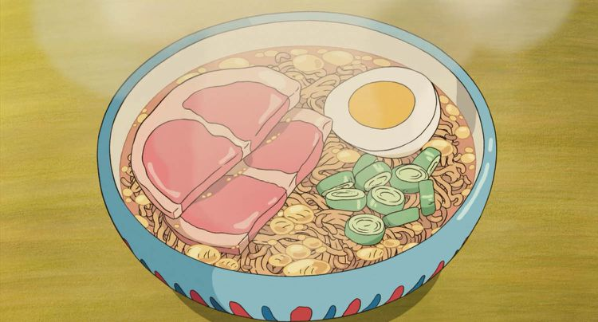

Ponyo's Ramen

It's lunch time and you need something warm and tasty that
doesn't require too much effort. Ramen is the perfect meal for you! Follow
the instructions below and you'll be screaming "HAM" like Ponyo in no
time.
- 2-3 cups of your preferred broth
- 1 egg
- A couple slices of ham
- Salt and pepper for seasoning
- 1 green onion
- 1 pack of ramen noodles
-
In a medium sized pot on medium low heat, add your preferred broth
base and let boil.
- Once boiled, add in your pack of ramen to the broth.
-
When your ramen is mostly cooked, add your egg and ham on top and
cover with a lid, lowering heat to simmer
- Finely chop your green onions.
-
Once your egg looks cooked, remove lid and pour your ramen into a
boil.
-
Finally add your green onions as a garnish and season with salt and
pepper to your taste.
Enjoy!